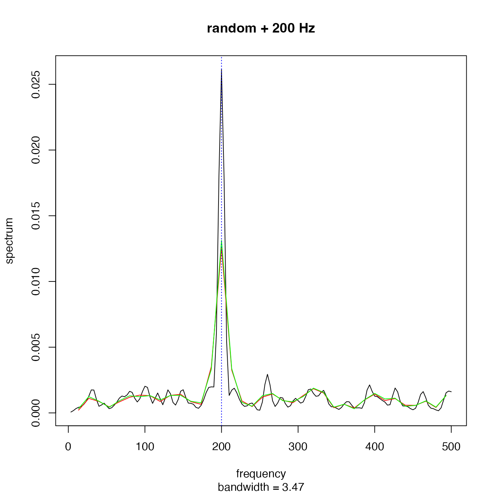

Compute periodogram using the Welch (1967) method. This is somewhat analogous to the Matlab function of the same name, but it is not intended as a drop-in replacement.
Usage
pwelch(
x,
window,
noverlap,
nfft,
fs,
spec,
demean = FALSE,
detrend = TRUE,
plot = TRUE,
debug = getOption("oceDebug"),
...
)Arguments
- x
a vector or timeseries to be analyzed. If
xis a timeseries, then it there is no need tofs, and doing so will result in an error if it does not match the value inferred fromx.- window
optional numeric vector specifying a window to be applied to the timeseries subsamples. This is ignored if
specis provided. Otherwise, ifwindowis provided, then it must either be of the same length asnfftor be of length 1. In the first case, the vector is multiplied into the timeseries subsample, and the length ofwindowmust equalnfftis that is supplied. In the second thenwindowis taken to be the number of sub-intervals into which the time series is to be broken up, with a hamming window being used for each sub-interval. Ifwindowis not specified andnfftis given, then the window is constructed as a hamming window with lengthnfft. And, if neitherwindownornfftare specified, thenxwill be broken up into 8 portions.- noverlap
number of points to overlap between windows. If not specified, this will be set to half the window length.
- nfft
length of FFT. See
windowfor hownfftinteracts with that argument.- fs
frequency of time-series. If
xis a time-series, and iffsis supplied, then time-series is altered to have frequencyfs.- spec
optional function to be used for the computation of the spectrum, to allow finer-grained control of the processing. If provided,
specmust accept a time-series as its first argument, and must return a list containing the spectrum inspecand the frequency infreq. Note that no window will be applied to the data after subsampling, and an error will be reported ifwindowandspecare both given. An error will be reported ifspecis given butnfftis not given. Note that the values ofdemean,detrendandplotare ignored ifspecis given. However, the ... argument is passed tospec.- demean, detrend
logical values that can control the spectrum calculation, in the default case of
spec. These are passed tospectrum()and thencespec.pgram(); see the help pages for the latter for an explanation.- plot
logical, set to
TRUEto plot the spectrum.- debug
a flag that turns on debugging. Set to 1 to get a moderate amount of debugging information, or to 2 to get more.
- ...
optional extra arguments to be passed to
spectrum(), or tospec, if the latter is given.
Value
pwelch returns a list mimicking the return value from spectrum(),
containing frequency freq, spectral power spec, degrees of
freedom df, bandwidth bandwidth, etc.
Details
First, x is broken up into chunks,
overlapping as specified by noverlap. These chunks are then
multiplied by the window, and then
passed to spectrum(). The resulting spectra are then averaged,
with the results being stored in spec of the return value. Other
entries of the return value mimic those returned by spectrum().
It should be noted that the actions of several parameters are interlocked,
so this can be a complex function to use. For example, if window is
given and has length exceeding 1, then its length must equal nfft, if the
latter is also provided.
Bugs
Both bandwidth and degrees of freedom are just copied from the values for one of the chunk spectra, and are thus incorrect. That means the cross indicated on the graph is also incorrect.
Historical notes
2021-06-26: Until this date,
pwelch()passed the subsampled timeseries portions throughdetrend()before applying the window. This practice was dropped because it could lead to over-estimates of low frequency energy (as noticed by Holger Foysi of the University of Siegen), perhaps becausedetrend()considers only endpoints and therefore can yield inaccurate trend estimates. In a related change,demeananddetrendwere added as formal arguments, to avoid users having to trace the documentation forspectrum()and thenspec.pgram(), to learn how to remove means and trends from data. For more control, thespecargument was added to let users sidestepspectrum()entirely, by providing their own spectral computation functions.
References
Welch, P. D., 1967. The Use of Fast Fourier Transform for the Estimation of Power Spectra: A Method Based on Time Averaging Over Short, Modified Periodograms. IEEE Transactions on Audio Electroacoustics, AU-15, 70–73.
Examples
library(oce)
Fs <- 1000
t <- seq(0, 0.296, 1 / Fs)
x <- cos(2 * pi * t * 200) + rnorm(n = length(t))
X <- ts(x, frequency = Fs)
s <- spectrum(X, spans = c(3, 2), main = "random + 200 Hz", log = "no")
w <- pwelch(X, plot = FALSE)
lines(w$freq, w$spec, col = "red")
w2 <- pwelch(X, nfft = 75, plot = FALSE)
lines(w2$freq, w2$spec, col = "green")
abline(v = 200, col = "blue", lty = "dotted")

cat("Checking spectral levels with Parseval's theorem:\n")
#> Checking spectral levels with Parseval's theorem:
cat("var(x) = ", var(x), "\n")
#> var(x) = 1.399508
cat("2 * sum(s$spec) * diff(s$freq[1:2]) = ", 2 * sum(s$spec) * diff(s$freq[1:2]), "\n")
#> 2 * sum(s$spec) * diff(s$freq[1:2]) = 1.452406
cat("sum(w$spec) * diff(s$freq[1:2]) = ", sum(w$spec) * diff(w$freq[1:2]), "\n")
#> sum(w$spec) * diff(s$freq[1:2]) = 0.6915331
cat("sum(w2$spec) * diff(s$freq[1:2]) = ", sum(w2$spec) * diff(w2$freq[1:2]), "\n")
#> sum(w2$spec) * diff(s$freq[1:2]) = 0.7083285
# co2
par(mar = c(3, 3, 2, 1), mgp = c(2, 0.7, 0))
s <- spectrum(co2, plot = FALSE)
plot(log10(s$freq), s$spec * s$freq,
xlab = expression(log[10] * Frequency), ylab = "Power*Frequency", type = "l"
)
title("Variance-preserving spectrum")
pw <- pwelch(co2, nfft = 256, plot = FALSE)
lines(log10(pw$freq), pw$spec * pw$freq, col = "red")